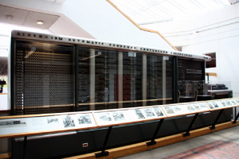

Criando listas Ordenas e Não ordenadas
Lista ordenadas
- Acorda
- Tomar cafe
- Estudar
- Correr
Listas Não-Ordenadas
- Tomar banho
- Hidratar o cabelo
- Comprar um monitor
colocando uma imagem

Linguagens que eu quero aprender
- Antigas
- C#
- C++
- Java
- php
- Novas
- JavaScript
- Python
- Ruby
- go
Jogos que eu gostos
- Jogos Atuais
- The Sims
- Minecreft
- hogtwacity
- the ous last
- Jogos Antigos
- Mario
- Indiana jones
- Jumanji
- gta 4
- Gta play 2
- Gta play 3
- Gta Online pc
Lista de definição
- Html
- Linguagem de marcção para criação de site.
- Css
- Linguagem de marcação ultilizada para a criação do desing do site
- JavaScript
- Linguagem de programação ultilizada para a funcionalidade do site
click aqui para voltar a pagina inicial